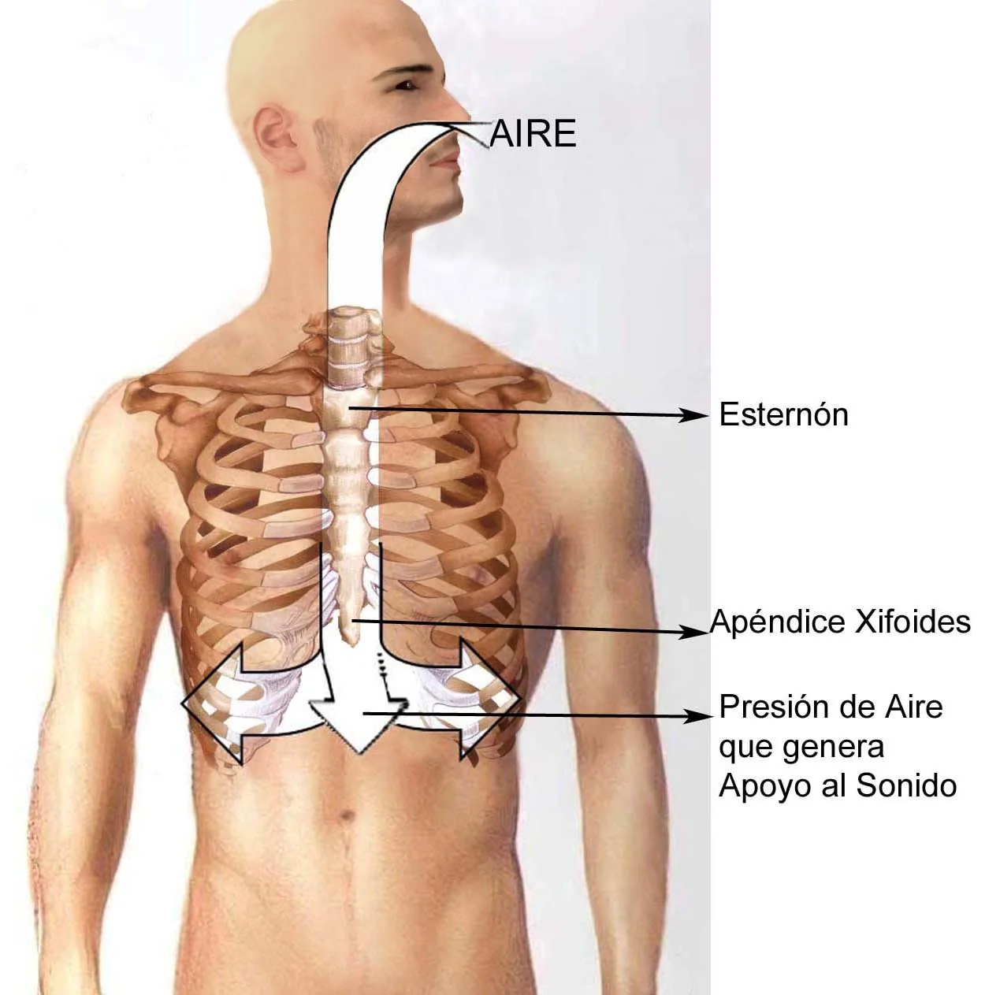
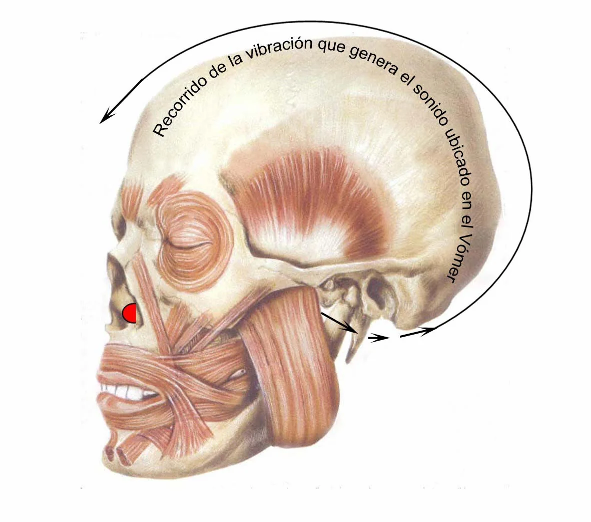

Mi técnica vocal paso a paso
La anatomía de una voz libre
Un método que no pide imaginar colores ni buscar los agudos «arriba». Explica qué músculos intervienen, cómo se mueven y cómo llevar cada movimiento a la obra que quieres cantar.
«La técnica vocal es la base donde se construye la interpretación.»Carmen Moreno
El principio
Comprender el movimiento, no imitar el sonido
Muchos cantantes intentan el aprendizaje desde la imitación: copian el sonido de su maestro o de un intérprete admirado y confían en que un día saldrá solo. Carmen propone el camino contrario. Primero se comprende el movimiento anatómico que produce el sonido libre. Después se entrena en la vocalización y por último se aplica a la obra en estudio.
Por eso insiste en que no conviene cantar «imaginando un color»: las emociones fluctúan en escena y el color imaginado con ellas. En cambio, si el movimiento técnico es correcto, el sonido se coloca solo en el vómer y tiene las cualidades que se esperan de él.
Al principio, los movimientos musculares de cada intervalo pueden parecer extraños. Con la práctica se ve que están en armonía con la anatomía del rostro y tienen una lógica de ejecución, igual que en el ballet, que ejercita en la barra posiciones y movimientos para lograr después los gestos sutiles de la expresión.
Es importante no imitar a ningún intérprete; es mejor analizar la estrategia técnica.Carmen Moreno · 2015
No garantizo diversión, sino el placer de alcanzar la ejecución de un trabajo musical artístico satisfactorio.Carmen Moreno
Mapa interactivo
Cuatro gestos, un sonido
Pulsa cada punto del esquema o cada pestaña para descubrir qué ocurre en el cuerpo y cómo se trabaja en clase.




Respiración abdominal
El aire que sostiene la frase
El aire inspirado ejerce una presión costal y abdominal externa, con la proyección hacia afuera del músculo recto mayor del abdomen, generando la presión de apoyo al sonido. Esta presión permite sostener las frases, las notas largas y los agudos sin forzar la laringe ni musculatura adyacente.
Por el contrario, la respiración alta, de pecho produce agudos de corta duración, obliga a usar fuerza física y a la larga puede dañar las cuerdas vocales.
Si la obra empieza con unos compases pianísticos u orquestales, se deben respirar y cantar mentalmente esos compases o frase melódica, de tal forma que cuando corresponde la participación o entrada de la voz del intérprete, esta no sea agresiva sino una continuidad de la música que está ocurriendo.
Protrusión de la mandíbula
Preparar el espacio antes de producir el sonido
La mandíbula se desplaza, protruye hacia delante, hacia fuera, como «la vara de un trombón» ayudada por los músculos pterigoideos, cigomáticos y cuadrado del mentón, luego cae en recto no en bostezo. Esta preparación debe hacerse antes de la producción del sonido.
Si la boca se desvía hacia un lado del rostro, significa que se está accionando un solo pterigoideo, repetir el movimiento.
Comisuras y labios
Acercar los armónicos, timbrar el sonido
Las comisuras se mantienen próximas, sin abrir la boca en sonrisa. El labio inferior desciende y deja ver los dientes de abajo. La porción central del labio superior se eleva, gracias al músculo elevador del labio superior, para proyectar los sobreagudos.
Al aproximar las comisuras se aproximan también los armónicos, y el sonido gana timbre y brillo.

Colocación en vómer
Todos los sonidos en el mismo punto del rostro
El objetivo final de la vocalización es detectar el sonido en el vómer y reconocer el recorrido de su vibración. El sonido se comporta como el punto sísmico en un terremoto, que se localiza en un punto y la mayor frecuencia se puede sentir a km. El sonido se coloca en vómer y su frecuencia realiza un recorrido por debajo del cráneo rozando la primera vértebra cervical resonando como consecuencia en el pecho, sigue su recorrido por la cabeza y a la altura de la confluencia del hueso frontal con los dos occipitales se genera otro punto de vibracional generando una vibración en la cabeza, sigue el trayecto y al llegar al rostro se empodera de los senos 4 senos paranasales facilitando al sonido que permanece en vómer una mayor intensidad en su proyección.
Una idea clave
Vocalizar no es calentar
Para Carmen se hace técnica al vocalizar, la técnica que se va aplica a los intervalos que aparecen en la obra que se va a interpretar.
Cada ejercicio permite el estudio de ejecución de intervalos de segundas, terceras, quintas, saltos de octava, de inicio de frase con nota aguda o grave, etc. Mientras se vocaliza se observa la ejecución del movimiento y después, esa misma comprensión se aplica a los mismos intervalos de la obra que se va a estudiar. Con el coro hace lo mismo: dedica media hora a vocalizar antes de cada ensayo y de cada concierto.
Este criterio de trabajo vocal centró su artículo en el International Choral Bulletin de la Federation International for Choral Music, IFCM, 2015.
Los artistas no calentamos, hacemos técnica al vocalizar, calienta el deportista.Carmen Moreno

Del ejercicio a la obra
Así es una hora de clase
La misma clase, online o presencial, organizada en dos mitades. Así la describe la propia Carmen.
0–30 min Vocalización: técnica vocal
- 1
Dos objetivos claros
Antes de cada ejercicio explica qué intervalo se trabaja (una 2.ª, una 3.ª…) y qué músculos del rostro intervienen, como el cigomático mayor o el triangular de los labios.
- 2
Imágenes en 3D
El primer día, y siempre que haga falta, muestra animaciones 3D de la respiración, la protrusión de la mandíbula y la colocación del sonido.
- 3
Demostración
Explica y enseña cómo se ejecuta el ejercicio antes de empezar a vocalizar.
- 4
Intervalos progresivos
De las 2.ª y 3.ª a intervalos cada vez más exigentes, sin bajar ni subir más de lo que corresponde a tu nivel.
- 5
Corrección al momento
Comenta los destellos de comprensión y si hay un error, detiene el ejercicio, reconoce la causa del error, corrige, enseña la correcta ejecución hasta que se logre la comprensión y sigue.
- 6
Sincronización
Poco a poco trabaja la sincronización de la respiración abdominal con los movimientos de protrusión de mandíbula y de labios. El tiempo de aprendizaje es relativo en cada persona.
Puede alargarse según el nivel y lo que necesite cada alumno.
30–60 min Aplicación a la obra
- 7
Aplicación
Lo comprendido en los ejercicios se lleva a la obra que has elegido. Para empezar prefiere una obra del Renacimiento, por su estructura armónica; después, otros géneros según tu tesitura.
El aula de clase presencial en Barcelona dispone de un espejo adyacente al piano que facilita la comunicación. Mientras se realiza el ejercicio Carmen ejecuta los mismos en gestual para que el estudiante observe a través del espejo, y tenga la referencia del movimiento correcto.
Señales que conviene corregir
Lo que el cuerpo está diciendo
Algunos gestos al cantar revelan qué parte de la técnica aún no se ha comprendido. Carmen los observa en cada vocalización.
La boca se va de lado
Si la mandíbula se desvía a la derecha o a la izquierda, solo actúa uno de los dos pterigoideos. Hay que vigilar el movimiento frontal de protrusión.
La cabeza se inclina
Es la tendencia a buscar los agudos «arriba». Falta comprender la colocación en vómer.
El agudo sale apretado
No está realizando correctamente la salida de mandíbula y los giros de caída hacia adelante que facilitan la colocación y libertad del sonido.
Falta el aire
No se ha alcanzado comprensión de la presión de apoyo que genera la musculatura abdominal.
Se busca un color
Imaginar el color del sonido no garantiza nada útil, porque la emoción cambia en escena. El movimiento anatómico correcto sí garantiza confianza y seguridad en la producción del sonido.
Se sonríe al cantar
Abrir las comisuras en sonrisa separa los armónicos y resta timbre. Las comisuras se mantienen próximas.
Preguntas frecuentes
Sobre el método
Lo que más preguntan quienes se acercan por primera vez a la técnica vocal de Carmen.
Probar una clase¿Necesito saber música o tener buena voz para empezar?
No. El estudio de la técnica vocal no tiene límite de edad ni de formación académica: basta con querer cantar mejor. Saber solfeo ayuda, pero no es un requisito para empezar.
¿Sirve para música moderna o solo para canto lírico?
La base técnica es la misma. En la música moderna o melódica las comisuras no se exigen tan próximas, para mantener el estilo, y la presión de apoyo es menos exigente. Si después quieres pasar a la lírica, solo hay que completar esos detalles.
¿Cuánto se tarda en notar resultados?
Depende de cada persona y de su punto de partida. Lo que Carmen observa siempre es que el tiempo invertido en técnica se recupera después en el estudio de las obras: se resuelven antes las dificultades y se aprende a cantar bien.
¿Qué significa «independizarse» del maestro?
Que comprendas los movimientos anatómicos hasta poder corregirte tú. El objetivo de Carmen es que no dependas de ella para siempre y que acabes dominando tu instrumento: tu voz.
¿Dónde puedo profundizar?
En su libro Mi técnica vocal paso a paso, con DVD en 3D, en la serie de vídeos didácticos y en los consejos de la Academia.

Tu primera clase
¿Tu voz es ideal para cantar? Voy a enseñarte cómo.
Coméntame tu objetivo, proyecto o intención con el canto, acordamos una línea de trabajo vocal y seleccionamos el horario conveniente de forma online o presencial, aquí, en Barcelona.